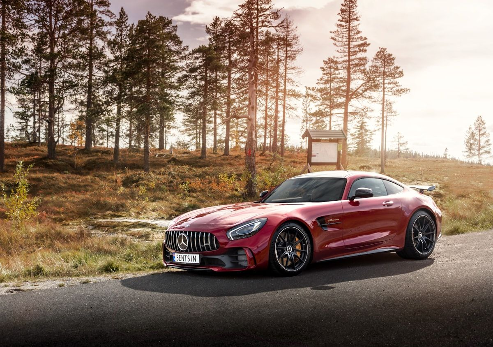

小吴手绘汽车
从比例到渲染，像设计师一样画车。
 开始学习
开始学习
手绘范例

这是专业的手绘汽车设计稿。画的时候可以观察它的比例、线条和光影。
真实车型参考
画之前先观察真车：车轮高度、车身长度、座舱位置——比例都在照片里。

从比例到渲染，像设计师一样画车。
开始学习
这是专业的手绘汽车设计稿。画的时候可以观察它的比例、线条和光影。
画之前先观察真车：车轮高度、车身长度、座舱位置——比例都在照片里。
